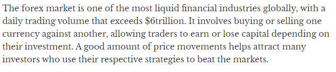
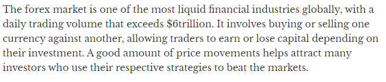

Let's talk about the perfect FORMULA to Forex Trading and the mistakes to avoid when trading Forex. These mistakes almost sent me back to my village, but i thank God for Forex Trading Robots.
I occasionally receive mails from folks who have read my book and want my advice on what business to start
I received 17 emails in the last week alone.
12 of them were form youth trying to start Forex Trading with little or no knowledge of coding at all.
Firstly, I must apologize
I was supposed to post earlier this week, but I had to carry out more research on the topic. And I’ve also been busy trying to get more things done.
Plus, I had to verify this information before posting.
Before we dive into this, let’s talk about what Forex Trading is.
What is Forex Trading And How Do you Start?
Before I tell you what Forex Trading is, I want you to stop for a moment and think about what Forex is to you in your own Language.
Done?
Now, let's proceed
James Chen, (an expert trader, investment adviser, and global market strategist), explained Forex to be a combination of the words “foreign currency” and “exchange”.
Foreign exchange is the process of converting one currency into another for a variety of reasons, most commonly for trade, tourism, or commerce.
Forex trading is similar to buying and selling other types of securities, like stocks. The main difference is that forex trading is done in pairs, such as EUR/USD (euro/U.S. dollar) or JPY/GBP (Japanese yen/British pound).
When you make a forex trade, you sell one currency and buy another.
The foreign exchange market is where currencies are traded. Currencies are important because they allow us to purchase goods and services locally and across borders.
If you are living in Nigeria and want to buy cheese from France, then either you or the company from which you buy the cheese has to pay the French for the cheese in Euros (EUR). This means that the Nigeria importer would have to exchange the equivalent value of Naira into Euros.
But, it is considered by many to be nothing more than gambling. After all whenever you take a position in a particular currency pair, you are essentially betting on the price to either go up or down by taking a long or short position.
So is forex trading really just another form of gambling?
Well to the inexperienced forex traders, it would appear to be very easy to arrive at this conclusion, particularly if you start watching the chart of any currency pair and observe how it moves in a seemingly random fashion.
Confusing? I know
Let me involve you guys in a very short story of a friend of mine. He is someone that doesn’t like taking risks. Last year, I asked if he has ever considered Forex or Crypto as any form of gambling.
He replied,
“I don’t want to put my money into some stock I know nothing about. Besides, this thing is gambling and I don’t know how to trade”. And then he told me to go ahead and invest.
I don’t blame him though
Not the kind of response I was expecting, but I didn’t say anything. That made me more curious about Forex. So, I nosedived into it. I downloaded pdfs, articles, youtube videos, anything that has to do with trading Forex.
I was in a haste to get rich quickly, forgetting there are some mistakes you should avoid when involved in this type of business.
How Do You Start Forex Trading?
Trading forex is similar to equity trading. Here are some steps to get yourself started on the forex trading journey.
- Learn about Forex:
- Set up a brokerage account:
- Develop a trading strategy:
- Always be on top of your numbers:
- Cultivate emotional equilibrium:
While it is not complicated, forex trading is a project of its own and requires specialized knowledge.There are several online courses available for beginners that teach the ins and outs of forex trading.But I will recommend one at the end of this article.
For beginner traders, it is a good idea to set up a micro trading forex account with low capital requirements.
A good trading strategy is based on the reality of your situation and finances.
Once you start trading, always check your positions at the end of the day.
It’s important to not get carried away by your trading positions and cultivate emotional equilibrium across profits and losses.
According to THE NATION, "The Forex market is one of the most liquid financial industries globally, with trading volume that exceeds $6trillion".
 

This easy-entry is not a promise of a quick profit, however.
Before you take the plunge, consider these 4 common mistakes you should avoid, as they are the main reasons new forex day traders fail
No one told me this, when i started my journey on Forex Trading. Take note of these 4.
- If you keep losing, Don't keep trading.
- Trading Without a Stop Loss
- Adding to a Losing Day Trade
- Risking More Than You Can Affort to Lose
There are two trading statistics to keep a close eye on:
Your win-rate and risk-reward ratio.
Your win-rate is how many trades you win, expressed as a percentage.
Your reward-risk ratio is how much you win relative to how much you lose on an average trade.
You should have a stop-loss order for every forex day trade you make. A stop-loss is an offsetting order that gets you out of a trade if the price moves against you by an amount you specify.
Adding to a losing trade is a dangerous practice. The price can move against you for much longer than you expect, as your loss gets exponentially larger.
The key part of your risk management strategy is to establish how much of your capital you are willing to risk on each trade. Day traders ideally should risk less than 1% of their capital on any single trade.
But, you know there is a safer way to do this.
Robots. Forex made easy with Robots!
Yes, you see right. Robots.
Do you know you can use Robots for Forex Trading?
Ask me how?
Forex Trading Robots are automated software programs that generate trading signals. Most of these robots are built with MetaTrader, using the MQL scripting language, which lets traders generate trading signals or place orders, and manage trades
- Forex trading robots are automated software programs used to generate trading signals in FX markets.
- Forex robots are designed to remove the psychological element of trading, which can be detrimental.
- While forex trading robots advertise the prospect of profits, it is important to remember that they are limited in their capabilities and not foolproof.
MQL?
MetaQuotes Language 4 (MQL4) is a programming language for developing trading robots, technical indicators, scripts, and function libraries for use on the MetaTrader 4 trading platform.
MetaTrader 4 offers the leading trading and analytical technologies, as well as additional services. It has everything you need for Forex trading.
This has helped me in building my self-confidence. How I said I lost 3 million naira to trading, but thanks to Forex trading robots, I’m making my money every day.
Why I recommend Forex Trading Robots?
- Step by Step approach to determine which strategies are profitable
- Helps to instantly turn profitable strategies into Money Making Robots
- This will help trade the Financial Markets for 24hours every day
- Robots make the process simpler, less time-consuming and automated
- Accurate and Effective.
The good thing is that you can turn your capital into a lots of profits within a few weeks if you use a proven system.
And you can also build robots with no or little knowledge of coding
Talking about a proven system, let me introduce you to a guy who has trained many of the successful Forex traders here in Nigeria.
His name is Ransom Enupe. He is alsoan Entrepreneur, Forex trader, Architect and Instructor on Udemy.
He founded AutomatedFx, to help traders both beginners and experienced and even people who know nothing about trading the Forex market, to know more about, and benefit from automated trading by providing quality knowledge and also tools that will help them succeed in the global financial markets.
Many of his students are young men and women
This business is straightforward, but many people still fail at it becaues they don't understand how it works.
The Forex Trading Robots Guide that helped me turn my losses to profits is secretly available at 87% discounts.
The secrets to Building Trading Robots that actually work.
Instant Strategy Evaluation.
How you can Trade the Forex Market for 24Hours Everyday.
How to get 24 Hours Support Via Chat Group So You Never Get Stuck
One more thing...
In case you are having doubts about if this business model will work for you or not, my answer to that is – IT WILL WORK FOR YOU.
As long as you follow the simple rules Mr Ransom explained
This business is actually an improved form of trading.
IT'S NOW YOUR DECISION TO MAKE.
Click here to get the discount link
I Want the Link